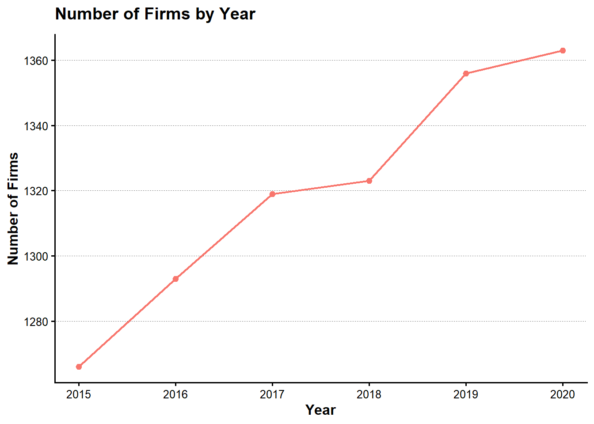
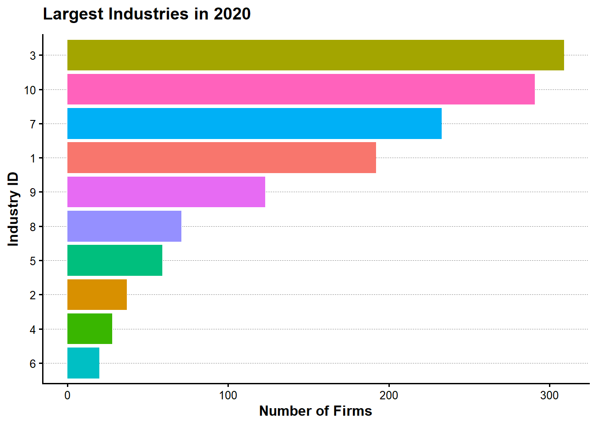
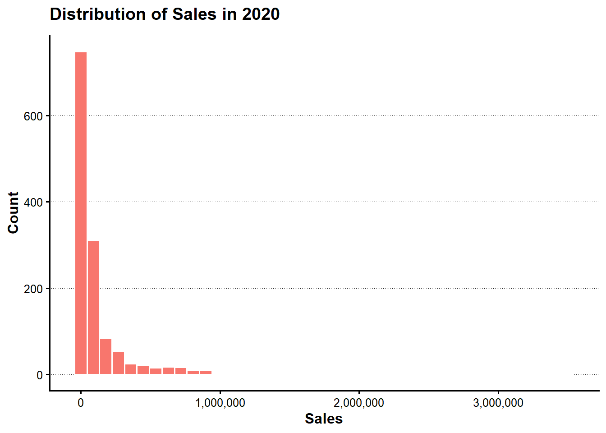
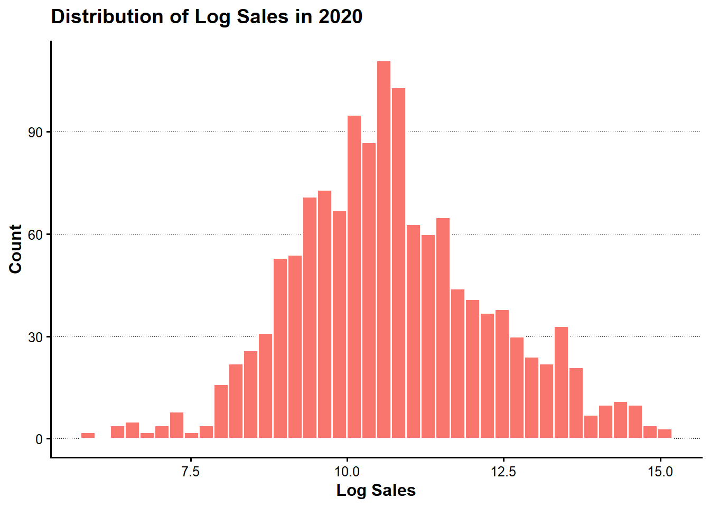
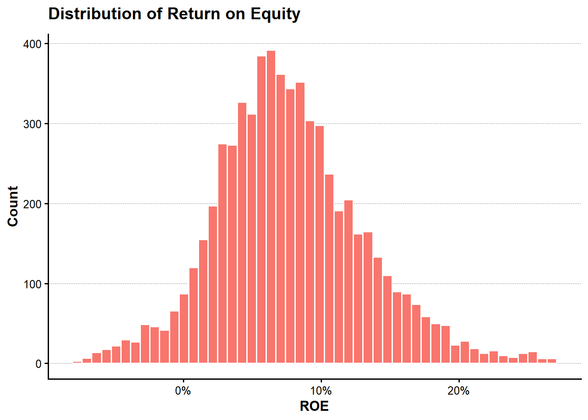
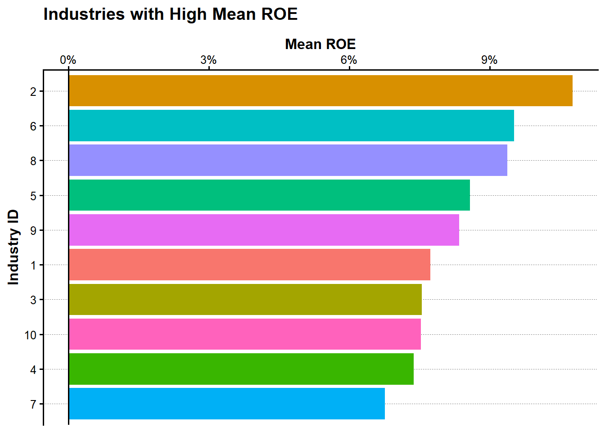
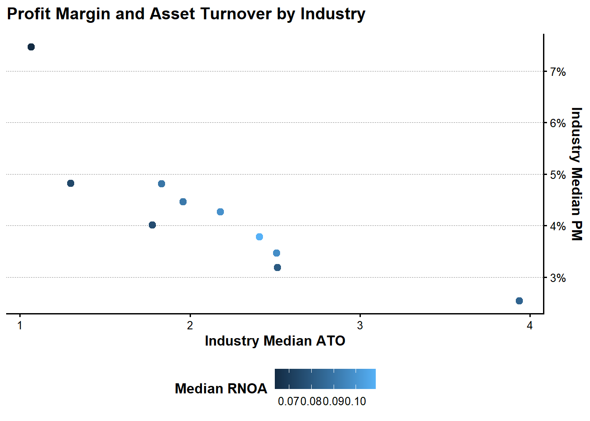
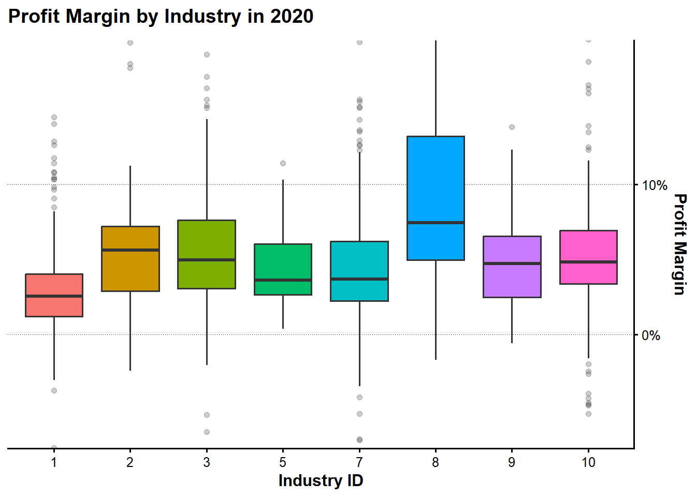

suppressPackageStartupMessages({
library(tidyverse)
library(ggthemes)
library(QuantLib)
library(GaussQuant)
})第2章 財務データの整理と分析
本章では、企業の財務データを読み込み、データ型、欠損値、年度構成、産業構成を確認した上で、株主資本、自己資本利益率（ROE）および上級デュポン・モデルの構成要素を計算する。第1章で学んだdplyr、tidyr、purrr、ggplot2を、実際のパネルデータ分析へ応用する。
本章のコードは、次の方針で統一する。
- パイプ演算子には
|>を使う。 - 明示的な
for、while、repeatループは使わない。 - データ操作には
dplyrとtidyrを使う。 - 反復的な処理が必要な場合は
purrr::map()系関数を使う。 - 入力データはプロジェクトルートの
simulation_data以下から検索する。 - 中間データは
simulation_data/derivedへ保存し、元データを上書きしない。
2.1 使用するパッケージ
パッケージが未導入の場合は、RStudioのConsoleで一度だけ次を実行する。
install.packages("tidyverse")2.2 プロジェクトとデータディレクトリ
第1章と同様に、現在の作業ディレクトリと_quarto.ymlを利用して、LagrangeFinanceのプロジェクトルートを確認する。これにより、リポジトリを別の場所へ移しても、絶対パスを書き換えずに実行できる。
project_candidates <- unique(c(
Sys.getenv("QUARTO_PROJECT_DIR"),
getwd(),
dirname(getwd())
))
project_candidates <- project_candidates[nzchar(project_candidates)]
project_matches <- project_candidates[
file.exists(file.path(project_candidates, "_quarto.yml"))
]
if (length(project_matches) == 0) {
stop("LagrangeFinanceのプロジェクトルートを確認できません。")
}
project_dir <- normalizePath(project_matches[1], winslash = "/", mustWork = TRUE)
data_dir <- file.path(project_dir, "simulation_data")
derived_data_dir <- file.path(data_dir, "derived")
if (!dir.exists(data_dir)) {
stop("simulation_dataディレクトリが見つかりません: ", data_dir)
}
project_dir[1] "C:/AnalyticFin/Projects/LagrangeFinance"data_dir[1] "C:/AnalyticFin/Projects/LagrangeFinance/simulation_data"simulation_data以下のCSVファイルを再帰的に取得する。
csv_paths <- list.files(
path = data_dir,
pattern = "\\.csv$",
full.names = TRUE,
recursive = TRUE
)
normalized_data_dir <- normalizePath(data_dir, winslash = "/", mustWork = TRUE)
normalized_csv_paths <- normalizePath(csv_paths, winslash = "/", mustWork = FALSE)
csv_catalog <- tibble(
file_name = basename(csv_paths),
relative_path = substring(
normalized_csv_paths,
first = nchar(normalized_data_dir) + 2
)
) |>
arrange(relative_path)
csv_catalog# A tibble: 27 × 2
file_name relative_path
<chr> <chr>
1 ch03_daily_stock_return.csv ch03_daily_stock_return.csv
2 ch03_output.csv ch03_output.csv
3 ch04_financial_data.csv ch04_financial_data.csv
4 ch04_output.csv ch04_output.csv
5 ch05_accounting_standard.csv ch05_accounting_standard.csv
6 ch05_earnings_management.csv ch05_earnings_management.csv
7 ch05_messy_stock_return.csv ch05_messy_stock_return.csv
8 ch05_output1.csv ch05_output1.csv
9 ch05_output2.csv ch05_output2.csv
10 ch05_stock_data.csv ch05_stock_data.csv
# ℹ 17 more rows2.3 財務データの読み込み
本章ではch04_financial_data.csvを使用する。ファイルがsimulation_data内のサブディレクトリに置かれていても、ファイル名から検索できる。
financial_data_candidates <- csv_paths[
basename(csv_paths) == "ch04_financial_data.csv"
]
if (length(financial_data_candidates) == 0) {
stop("ch04_financial_data.csvがsimulation_data以下に見つかりません。")
}
if (length(financial_data_candidates) > 1) {
stop(
"ch04_financial_data.csvが複数見つかりました: ",
paste(financial_data_candidates, collapse = ", ")
)
}
financial_data_path <- financial_data_candidates[1]
financial_data_raw <- readr::read_csv(
financial_data_path,
show_col_types = FALSE
)
financial_data_path[1] "C:/AnalyticFin/Projects/LagrangeFinance/simulation_data/ch04_financial_data.csv"financial_data_raw# A tibble: 7,920 × 11
year firm_ID industry_ID sales OX NFE X OA FA OL FO
<dbl> <dbl> <dbl> <dbl> <dbl> <dbl> <dbl> <dbl> <dbl> <dbl> <dbl>
1 2015 1 1 5261. 437. NA 287. 13006. 3543. 4373. 2481.
2 2016 1 1 5949. 564. 50.7 513. 13866. 4642. 4534. 3960.
3 2017 1 1 6505. 691. 29.5 662. 13953. 7744. 5111. 6159.
4 2018 1 1 6846. 751. 86.5 665. 18818. 7285. 5137. 10124.
5 2019 1 1 7572. 959. 298. 660. 18190 9735. 5488. 11362.
6 2020 1 1 7538. 778. -65.5 844. 20463. 10274. 5371. 13772.
7 2015 2 1 3506. 45.8 5.75 40.1 2978. 2258. 1840. 2341.
8 2016 2 1 3491. 51.2 1.88 49.4 3185. 1882. 1769. 2216.
9 2017 2 1 3946. 83.4 7.53 75.9 3392. 2425. 1955. 2727.
10 2018 2 1 4139. 93.4 6.82 86.6 3569. 2331. 2022. 2694.
# ℹ 7,910 more rows分析に必要な列が存在することを確認する。
required_columns <- c(
"firm_ID",
"industry_ID",
"year",
"sales",
"OA",
"OL",
"FO",
"FA",
"X",
"OX",
"NFE"
)
missing_columns <- setdiff(required_columns, names(financial_data_raw))
if (length(missing_columns) > 0) {
stop(
"財務データに必要な列が不足しています: ",
paste(missing_columns, collapse = ", ")
)
}2.4 データ構造の確認
glimpse(financial_data_raw)Rows: 7,920
Columns: 11
$ year <dbl> 2015, 2016, 2017, 2018, 2019, 2020, 2015, 2016, 2017, 2018…
$ firm_ID <dbl> 1, 1, 1, 1, 1, 1, 2, 2, 2, 2, 2, 2, 3, 3, 3, 3, 3, 3, 4, 4…
$ industry_ID <dbl> 1, 1, 1, 1, 1, 1, 1, 1, 1, 1, 1, 1, 1, 1, 1, 1, 1, 1, 1, 1…
$ sales <dbl> 5261.40, 5948.96, 6505.06, 6846.38, 7572.24, 7537.63, 3505…
$ OX <dbl> 437.49, 564.14, 691.18, 751.29, 958.53, 778.37, 45.82, 51.…
$ NFE <dbl> NA, 50.667498, 29.543157, 86.486500, 298.049774, -65.45877…
$ X <dbl> 286.64, 513.48, 661.64, 664.80, 660.48, 843.83, 40.07, 49.…
$ OA <dbl> 13005.55, 13865.58, 13952.58, 18818.48, 18190.00, 20462.86…
$ FA <dbl> 3543.43, 4642.16, 7743.99, 7284.72, 9735.13, 10274.25, 225…
$ OL <dbl> 4372.96, 4534.22, 5111.22, 5137.28, 5487.96, 5371.38, 1840…
$ FO <dbl> 2480.72, 3959.70, 6159.02, 10123.91, 11362.22, 13772.15, 2…financial_data_raw |>
summarise(
observations = n(),
variables = ncol(financial_data_raw),
first_year = min(year, na.rm = TRUE),
last_year = max(year, na.rm = TRUE),
firms = n_distinct(firm_ID),
industries = n_distinct(industry_ID)
)# A tibble: 1 × 6
observations variables first_year last_year firms industries
<int> <int> <dbl> <dbl> <int> <int>
1 7920 11 2015 2020 1515 10列ごとの欠損数と欠損率を確認する。
missing_summary <- financial_data_raw |>
summarise(
across(
everything(),
list(
missing = ~ sum(is.na(.x)),
missing_rate = ~ mean(is.na(.x))
),
.names = "{.col}__{.fn}"
)
) |>
pivot_longer(
cols = everything(),
names_to = c("variable", ".value"),
names_sep = "__"
) |>
arrange(desc(missing_rate), variable)
missing_summary# A tibble: 11 × 3
variable missing missing_rate
<chr> <int> <dbl>
1 NFE 1 0.000126
2 FA 0 0
3 FO 0 0
4 OA 0 0
5 OL 0 0
6 OX 0 0
7 X 0 0
8 firm_ID 0 0
9 industry_ID 0 0
10 sales 0 0
11 year 0 0 2.5 データ型と並び順の整理
企業IDと産業IDは分類を表すためファクター型にし、年度は整数型へ変換する。また、前年度の値を正しく取得できるよう、企業IDと年度で並べ替える。
financial_data <- financial_data_raw |>
mutate(
firm_ID = as.factor(firm_ID),
industry_ID = as.factor(industry_ID),
year = as.integer(year)
) |>
arrange(firm_ID, year)
glimpse(financial_data)Rows: 7,920
Columns: 11
$ year <int> 2015, 2016, 2017, 2018, 2019, 2020, 2015, 2016, 2017, 2018…
$ firm_ID <fct> 1, 1, 1, 1, 1, 1, 2, 2, 2, 2, 2, 2, 3, 3, 3, 3, 3, 3, 4, 4…
$ industry_ID <fct> 1, 1, 1, 1, 1, 1, 1, 1, 1, 1, 1, 1, 1, 1, 1, 1, 1, 1, 1, 1…
$ sales <dbl> 5261.40, 5948.96, 6505.06, 6846.38, 7572.24, 7537.63, 3505…
$ OX <dbl> 437.49, 564.14, 691.18, 751.29, 958.53, 778.37, 45.82, 51.…
$ NFE <dbl> NA, 50.667498, 29.543157, 86.486500, 298.049774, -65.45877…
$ X <dbl> 286.64, 513.48, 661.64, 664.80, 660.48, 843.83, 40.07, 49.…
$ OA <dbl> 13005.55, 13865.58, 13952.58, 18818.48, 18190.00, 20462.86…
$ FA <dbl> 3543.43, 4642.16, 7743.99, 7284.72, 9735.13, 10274.25, 225…
$ OL <dbl> 4372.96, 4534.22, 5111.22, 5137.28, 5487.96, 5371.38, 1840…
$ FO <dbl> 2480.72, 3959.70, 6159.02, 10123.91, 11362.22, 13772.15, 2…企業と年度の組合せが重複していないか確認する。
panel_key_duplicates <- financial_data |>
count(firm_ID, year, name = "observations") |>
filter(observations > 1)
panel_key_duplicates# A tibble: 0 × 3
# ℹ 3 variables: firm_ID <fct>, year <int>, observations <int>重複がある場合は、企業・年度の一意性を確認してから先へ進む必要がある。
if (nrow(panel_key_duplicates) > 0) {
stop("firm_IDとyearの組合せに重複があります。")
}2.6 年度別・産業別のデータ構成
年度別の企業数
旧コードでは年度ごとにループして企業数を数えていた。本章ではgroup_by()とsummarise()で一度に集計する。
firms_by_year <- financial_data |>
group_by(year) |>
summarise(
firms = n_distinct(firm_ID),
observations = n(),
.groups = "drop"
) |>
arrange(year)
firms_by_year# A tibble: 6 × 3
year firms observations
<int> <int> <int>
1 2015 1266 1266
2 2016 1293 1293
3 2017 1319 1319
4 2018 1323 1323
5 2019 1356 1356
6 2020 1363 1363firms_by_year |>
ggplot(aes(x = year, y = firms)) +
geom_line() +
geom_point() +
scale_x_continuous(breaks = firms_by_year$year) +
scale_y_continuous(
labels = scales::label_comma(),
expand = expansion(mult = c(0, 0.05))
) +
labs(
x = "Year",
y = "Number of Firms",
title = "Number of Firms by Year"
) +
theme_classic()
産業別の企業数
latest_year <- max(financial_data$year, na.rm = TRUE)
firms_by_industry <- financial_data |>
filter(year == latest_year) |>
count(industry_ID, name = "firms", sort = TRUE)
firms_by_industry# A tibble: 10 × 2
industry_ID firms
<fct> <int>
1 3 309
2 10 291
3 7 233
4 1 192
5 9 123
6 8 71
7 5 59
8 2 37
9 4 28
10 6 20firms_by_industry |>
slice_head(n = 15) |>
ggplot(aes(x = reorder(industry_ID, firms), y = firms)) +
geom_col() +
coord_flip() +
scale_y_continuous(
labels = scales::label_comma(),
expand = expansion(mult = c(0, 0.05))
) +
labs(
x = "Industry ID",
y = "Number of Firms",
title = paste("Largest Industries in", latest_year)
) +
theme_classic()
2.7 売上高の分布
売上高は企業規模によって大きく異なるため、元の値と自然対数の両方を確認する。
sales_summary <- financial_data |>
summarise(
observations = sum(!is.na(sales)),
minimum = min(sales, na.rm = TRUE),
first_quartile = quantile(sales, 0.25, na.rm = TRUE),
median = median(sales, na.rm = TRUE),
mean = mean(sales, na.rm = TRUE),
third_quartile = quantile(sales, 0.75, na.rm = TRUE),
maximum = max(sales, na.rm = TRUE)
)
sales_summary# A tibble: 1 × 7
observations minimum first_quartile median mean third_quartile maximum
<int> <dbl> <dbl> <dbl> <dbl> <dbl> <dbl>
1 7920 205. 16103. 40431. 166007. 118314. 3496433financial_data |>
filter(year == latest_year, !is.na(sales), sales >= 0) |>
ggplot(aes(x = sales)) +
geom_histogram(bins = 40) +
scale_x_continuous(labels = scales::label_comma()) +
scale_y_continuous(expand = expansion(mult = c(0, 0.05))) +
labs(
x = "Sales",
y = "Count",
title = paste("Distribution of Sales in", latest_year)
) +
theme_classic()
financial_data |>
filter(year == latest_year, !is.na(sales), sales > 0) |>
ggplot(aes(x = log(sales))) +
geom_histogram(bins = 40) +
scale_y_continuous(expand = expansion(mult = c(0, 0.05))) +
labs(
x = "Log Sales",
y = "Count",
title = paste("Distribution of Log Sales in", latest_year)
) +
theme_classic()
2.8 株主資本とROE
本章では、営業資産から営業負債を控除した純営業資産と、金融負債から金融資産を控除した純金融負債の差として株主資本を計算する。
\[ BE_t = (OA_t - OL_t) - (FO_t - FA_t) \]
ROEは当期純利益を期首株主資本で割って計算する。
\[ ROE_t = \frac{X_t}{BE_{t-1}} \]
ゼロ除算や無限大を欠損値へ変換する関数を用意する。
safe_divide <- function(numerator, denominator) {
result <- numerator / denominator
replace(result, !is.finite(result), NA_real_)
}financial_data <- financial_data |>
mutate(
NOA = OA - OL,
NFO = FO - FA,
BE = NOA - NFO
) |>
group_by(firm_ID) |>
arrange(year, .by_group = TRUE) |>
mutate(
lagged_BE = lag(BE),
ROE = safe_divide(X, lagged_BE)
) |>
ungroup()
financial_data |>
select(firm_ID, industry_ID, year, X, BE, lagged_BE, ROE) |>
slice_head(n = 10)# A tibble: 10 × 7
firm_ID industry_ID year X BE lagged_BE ROE
<fct> <fct> <int> <dbl> <dbl> <dbl> <dbl>
1 1 1 2015 287. 9695. NA NA
2 1 1 2016 513. 10014. 9695. 0.0530
3 1 1 2017 662. 10426. 10014. 0.0661
4 1 1 2018 665. 10842. 10426. 0.0638
5 1 1 2019 660. 11075. 10842. 0.0609
6 1 1 2020 844. 11594. 11075. 0.0762
7 2 1 2015 40.1 1055. NA NA
8 2 1 2016 49.4 1082. 1055. 0.0468
9 2 1 2017 75.9 1135. 1082. 0.0702
10 2 1 2018 86.6 1184. 1135. 0.0763ROEの要約統計量を確認する。
financial_data |>
summarise(
observations = sum(!is.na(ROE)),
mean = mean(ROE, na.rm = TRUE),
median = median(ROE, na.rm = TRUE),
standard_deviation = sd(ROE, na.rm = TRUE),
first_percentile = quantile(ROE, 0.01, na.rm = TRUE),
ninety_ninth_percentile = quantile(ROE, 0.99, na.rm = TRUE)
)# A tibble: 1 × 6
observations mean median standard_deviation first_percentile
<int> <dbl> <dbl> <dbl> <dbl>
1 6405 0.0777 0.0728 0.0663 -0.0795
# ℹ 1 more variable: ninety_ninth_percentile <dbl>極端値の影響を避けるため、1パーセンタイルから99パーセンタイルまでを表示する。
roe_limits <- quantile(
financial_data$ROE,
probs = c(0.01, 0.99),
na.rm = TRUE
)
financial_data |>
filter(
!is.na(ROE),
between(ROE, roe_limits[1], roe_limits[2])
) |>
ggplot(aes(x = ROE)) +
geom_histogram(bins = 50) +
scale_x_continuous(labels = scales::label_percent()) +
scale_y_continuous(expand = expansion(mult = c(0, 0.05))) +
labs(
x = "ROE",
y = "Count",
title = "Distribution of Return on Equity"
) +
theme_classic()
2.9 産業別のROE
industry_roe_summary <- financial_data |>
group_by(industry_ID) |>
summarise(
firms = n_distinct(firm_ID),
observations = sum(!is.na(ROE)),
mean_ROE = mean(ROE, na.rm = TRUE),
median_ROE = median(ROE, na.rm = TRUE),
.groups = "drop"
) |>
filter(observations > 0) |>
arrange(desc(mean_ROE))
industry_roe_summary# A tibble: 10 × 5
industry_ID firms observations mean_ROE median_ROE
<fct> <int> <int> <dbl> <dbl>
1 2 40 186 0.108 0.103
2 6 34 127 0.0951 0.0920
3 8 80 349 0.0937 0.0847
4 5 67 259 0.0857 0.0849
5 9 136 531 0.0834 0.0798
6 1 225 918 0.0773 0.0751
7 3 327 1433 0.0755 0.0701
8 10 314 1388 0.0753 0.0705
9 4 34 138 0.0737 0.0727
10 7 258 1076 0.0676 0.0604産業ごとの標本数が小さすぎる場合、平均値は一部企業の影響を強く受ける。ここではROEの観測数が50以上の産業だけを比較する。
industry_roe_summary |>
filter(observations >= 50) |>
slice_max(order_by = mean_ROE, n = 15, with_ties = FALSE) |>
ggplot(aes(x = reorder(industry_ID, mean_ROE), y = mean_ROE)) +
geom_col() +
coord_flip() +
geom_hline(yintercept = 0) +
scale_y_continuous(labels = scales::label_percent()) +
labs(
x = "Industry ID",
y = "Mean ROE",
title = "Industries with High Mean ROE"
) +
theme_classic()
2.10 企業の順位付け
最新年度について、産業内でROEが高い企業から順に順位を付ける。dense_rank()を使うと、同順位がある場合でも次の順位を飛ばさない。
latest_roe_ranking <- financial_data |>
filter(year == latest_year, !is.na(ROE)) |>
group_by(industry_ID) |>
mutate(ROE_rank = dense_rank(desc(ROE))) |>
ungroup() |>
arrange(industry_ID, ROE_rank)
latest_roe_ranking |>
select(industry_ID, ROE_rank, firm_ID, ROE) |>
slice_head(n = 20)# A tibble: 20 × 4
industry_ID ROE_rank firm_ID ROE
<fct> <int> <fct> <dbl>
1 1 1 8 0.388
2 1 2 90 0.334
3 1 3 225 0.301
4 1 4 81 0.231
5 1 5 171 0.218
6 1 6 138 0.207
7 1 7 66 0.203
8 1 8 153 0.198
9 1 9 181 0.191
10 1 10 65 0.189
11 1 11 92 0.175
12 1 12 195 0.157
13 1 13 13 0.155
14 1 14 23 0.153
15 1 15 148 0.150
16 1 16 214 0.146
17 1 17 115 0.146
18 1 18 201 0.143
19 1 19 50 0.142
20 1 20 143 0.142各産業でROEが最も高い企業を抽出する。
top_firm_by_industry <- latest_roe_ranking |>
group_by(industry_ID) |>
slice_max(order_by = ROE, n = 1, with_ties = FALSE) |>
ungroup() |>
select(industry_ID, firm_ID, ROE)
top_firm_by_industry# A tibble: 10 × 3
industry_ID firm_ID ROE
<fct> <fct> <dbl>
1 1 8 0.388
2 2 242 0.375
3 3 475 0.498
4 4 619 0.149
5 5 661 0.267
6 6 719 0.142
7 7 929 0.564
8 8 1042 0.256
9 9 1167 0.235
10 10 1380 0.2502.11 上級デュポン・モデル
上級デュポン・モデルでは、ROEを純営業資産利益率と財務レバレッジの効果へ分解する。
\[ ROE_t = RNOA_t + FLEV_{t-1}(RNOA_t - NBC_t) \]
ここで、各構成要素を次のように定義する。
\[ RNOA_t = \frac{OX_t}{NOA_{t-1}} \]
\[ PM_t = \frac{OX_t}{Sales_t} \]
\[ ATO_t = \frac{Sales_t}{NOA_{t-1}} \]
\[ FLEV_{t-1} = \frac{NFO_{t-1}}{BE_{t-1}} \]
\[ NBC_t = \frac{NFE_t}{NFO_{t-1}} \]
financial_data_dupont <- financial_data |>
group_by(firm_ID) |>
arrange(year, .by_group = TRUE) |>
mutate(
lagged_NOA = lag(NOA),
lagged_NFO = lag(NFO),
RNOA = safe_divide(OX, lagged_NOA),
PM = safe_divide(OX, sales),
ATO = safe_divide(sales, lagged_NOA),
lagged_FLEV = safe_divide(lagged_NFO, lagged_BE),
NBC = safe_divide(NFE, lagged_NFO),
ROE_DuPont = RNOA + lagged_FLEV * (RNOA - NBC),
DuPont_gap = ROE - ROE_DuPont
) |>
ungroup()
financial_data_dupont |>
select(
firm_ID,
year,
ROE,
RNOA,
PM,
ATO,
lagged_FLEV,
NBC,
ROE_DuPont,
DuPont_gap
) |>
slice_head(n = 10)# A tibble: 10 × 10
firm_ID year ROE RNOA PM ATO lagged_FLEV NBC ROE_DuPont
<fct> <int> <dbl> <dbl> <dbl> <dbl> <dbl> <dbl> <dbl>
1 1 2015 NA NA 0.0832 NA NA NA NA
2 1 2016 0.0530 0.0654 0.0948 0.689 -0.110 -0.0477 0.0530
3 1 2017 0.0661 0.0741 0.106 0.697 -0.0682 -0.0433 0.0661
4 1 2018 0.0638 0.0850 0.110 0.774 -0.152 -0.0546 0.0638
5 1 2019 0.0609 0.0701 0.127 0.553 0.262 0.105 0.0609
6 1 2020 0.0762 0.0613 0.103 0.593 0.147 -0.0402 0.0762
7 2 2015 NA NA 0.0131 NA NA NA NA
8 2 2016 0.0468 0.0451 0.0147 3.07 0.0783 0.0227 0.0468
9 2 2017 0.0702 0.0589 0.0211 2.79 0.309 0.0225 0.0702
10 2 2018 0.0763 0.0650 0.0226 2.88 0.266 0.0226 0.0763
# ℹ 1 more variable: DuPont_gap <dbl>デュポン分解で再構成したROEと、直接計算したROEの差を確認する。
financial_data_dupont |>
summarise(
comparable_observations = sum(!is.na(DuPont_gap)),
mean_absolute_gap = mean(abs(DuPont_gap), na.rm = TRUE),
maximum_absolute_gap = max(abs(DuPont_gap), na.rm = TRUE)
)# A tibble: 1 × 3
comparable_observations mean_absolute_gap maximum_absolute_gap
<int> <dbl> <dbl>
1 6405 0.000000367 0.00002082.12 PMとATOの関係
営業利益率PMと純営業資産回転率ATOは、企業の事業モデルを異なる側面から表す。産業別中央値を使って両者の関係を確認する。
industry_pm_ato <- financial_data_dupont |>
group_by(industry_ID) |>
summarise(
observations = sum(complete.cases(PM, ATO)),
median_PM = median(PM, na.rm = TRUE),
median_ATO = median(ATO, na.rm = TRUE),
median_RNOA = median(RNOA, na.rm = TRUE),
.groups = "drop"
) |>
filter(
observations >= 50,
is.finite(median_PM),
is.finite(median_ATO)
)
industry_pm_ato# A tibble: 10 × 5
industry_ID observations median_PM median_ATO median_RNOA
<fct> <int> <dbl> <dbl> <dbl>
1 1 918 0.0253 3.94 0.0839
2 2 186 0.0378 2.41 0.109
3 3 1433 0.0481 1.83 0.0897
4 4 138 0.0401 1.78 0.0759
5 5 259 0.0346 2.51 0.0976
6 6 127 0.0482 1.30 0.0741
7 7 1076 0.0318 2.52 0.0806
8 8 349 0.0747 1.07 0.0635
9 9 531 0.0426 2.18 0.0985
10 10 1388 0.0446 1.96 0.0907industry_pm_ato |>
ggplot(aes(x = median_ATO, y = median_PM)) +
geom_point() +
labs(
x = "Industry Median ATO",
y = "Industry Median PM",
title = "Profit Margin and Asset Turnover by Industry"
) +
theme_classic()
主要産業についてPMの分布を箱ひげ図で比較する。
major_industries <- firms_by_industry |>
slice_head(n = 8) |>
pull(industry_ID)
financial_data_dupont |>
filter(
year == latest_year,
industry_ID %in% major_industries,
!is.na(PM)
) |>
ggplot(aes(x = industry_ID, y = PM)) +
geom_boxplot(outlier.alpha = 0.25) +
coord_cartesian(ylim = quantile(
financial_data_dupont$PM,
probs = c(0.01, 0.99),
na.rm = TRUE
)) +
labs(
x = "Industry ID",
y = "Profit Margin",
title = paste("Profit Margin by Industry in", latest_year)
) +
theme_classic()
2.13 複数の財務指標を同じ形式で要約する
複数列に同じ集計を適用する場合は、列名のベクトルとpurrr::map_dfr()を組み合わせられる。
financial_metrics <- c("sales", "BE", "ROE", "RNOA", "PM", "ATO")
metric_summary <- financial_metrics |>
map_dfr(
\(metric_name) {
values <- financial_data_dupont[[metric_name]]
finite_values <- values[is.finite(values)]
tibble(
metric = metric_name,
observations = length(finite_values),
mean = mean(finite_values),
median = median(finite_values),
standard_deviation = sd(finite_values),
minimum = min(finite_values),
maximum = max(finite_values)
)
}
)
metric_summary# A tibble: 6 × 7
metric observations mean median standard_deviation minimum maximum
<chr> <int> <dbl> <dbl> <dbl> <dbl> <dbl>
1 sales 7920 166007. 40431. 381980. 205. 3.50e+6
2 BE 7920 111517. 26882. 420624. 137. 2.54e+7
3 ROE 6405 0.0777 0.0728 0.0663 -0.702 1.41e+0
4 RNOA 6405 0.111 0.0859 0.126 -0.820 1.83e+0
5 PM 7920 0.0455 0.0406 0.0422 -0.201 3.83e-1
6 ATO 6405 2.71 2.10 1.87 0.258 9.82e+02.14 中間データの保存
第3章では、本章で計算した株主資本、前年度株主資本、ROEなどを株式データと結合する。そのため、整理済みデータをsimulation_data/derived/ch04_output.csvへ保存する。元のch04_financial_data.csvは変更しない。
保存対象には、上級デュポン・モデルの計算結果も含める。
if (!dir.exists(derived_data_dir)) {
dir.create(derived_data_dir, recursive = TRUE)
}
financial_output_path <- file.path(
derived_data_dir,
"ch04_output.csv"
)
readr::write_csv(
financial_data_dupont,
financial_output_path
)
financial_output_path[1] "C:/AnalyticFin/Projects/LagrangeFinance/simulation_data/derived/ch04_output.csv"file.info(financial_output_path)[, c("size", "mtime")] size
C:/AnalyticFin/Projects/LagrangeFinance/simulation_data/derived/ch04_output.csv 2425789
mtime
C:/AnalyticFin/Projects/LagrangeFinance/simulation_data/derived/ch04_output.csv 2026-07-24 19:46:27保存したCSVを読み直し、行数と列名が一致することを確認する。
financial_output_check <- readr::read_csv(
financial_output_path,
show_col_types = FALSE
)
stopifnot(nrow(financial_output_check) == nrow(financial_data_dupont))
stopifnot(identical(names(financial_output_check), names(financial_data_dupont)))
tibble(
output_file = financial_output_path,
rows = nrow(financial_output_check),
columns = ncol(financial_output_check)
)# A tibble: 1 × 3
output_file rows columns
<chr> <int> <int>
1 C:/AnalyticFin/Projects/LagrangeFinance/simulation_data/derived… 7920 252.15 まとめ
本章では、財務データを再現可能な相対パスで読み込み、データ型、欠損値、パネルデータのキーを確認した。次に、年度別・産業別の企業構成、売上高の分布、株主資本、ROE、産業内順位を計算した。最後に、ROEをRNOA、財務レバレッジ、純借入コストへ分解し、第3章で利用する整理済みCSVをsimulation_data/derivedへ保存した。
第3章では、月次株式データからリターンを計算し、本章の財務データと結合する。